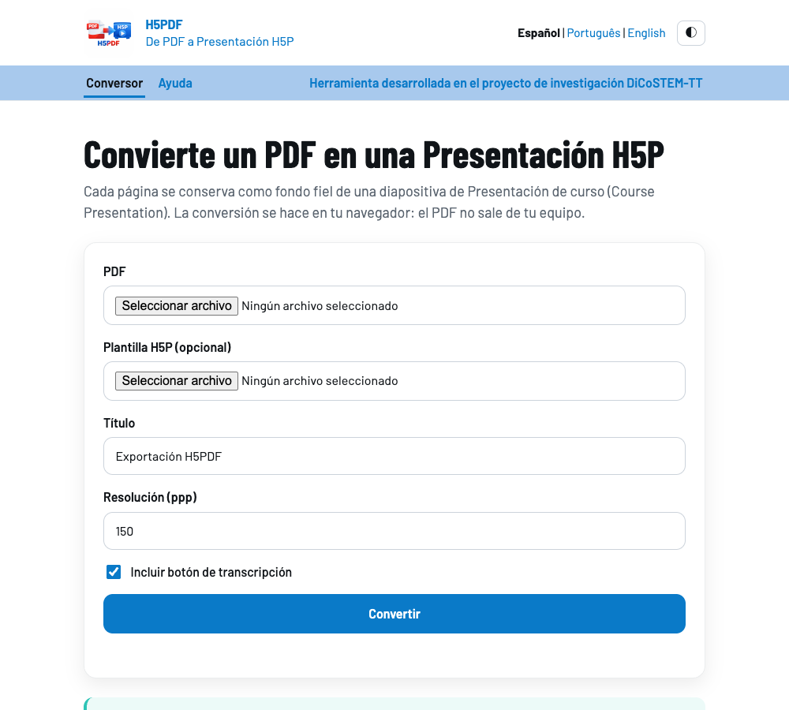
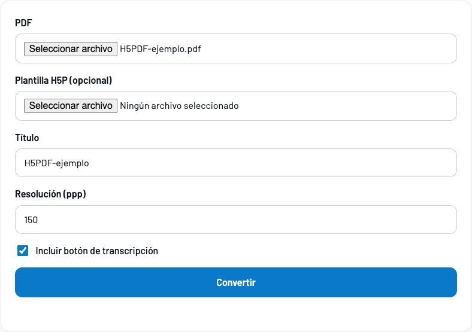
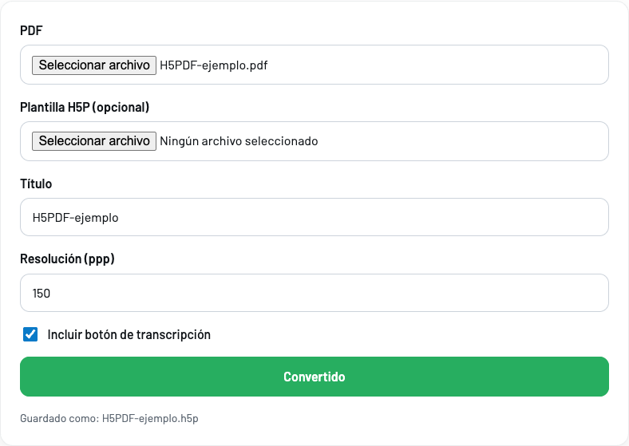
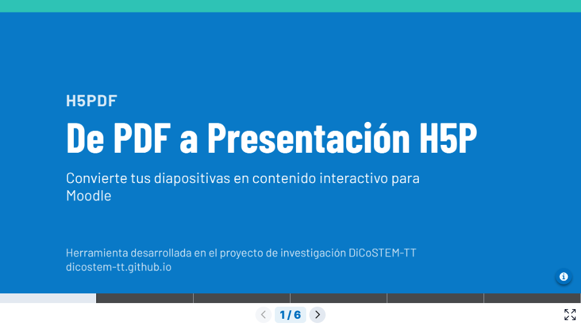
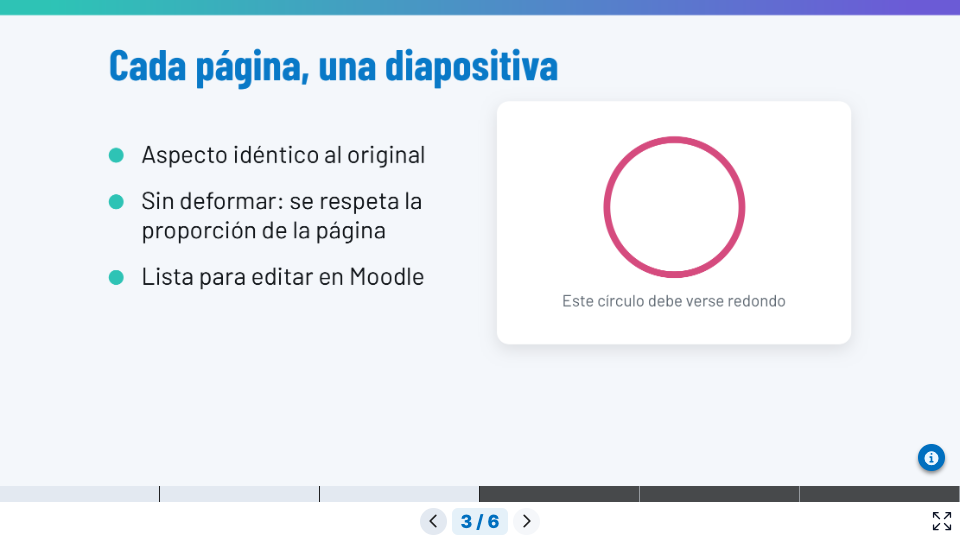
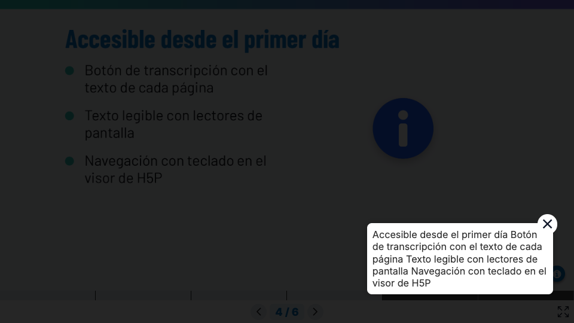

Ayuda de H5PDF
Todo lo necesario para convertir un PDF en una Presentación H5P y usarla en Moodle. Versión 0.2.0.
1. Qué es H5PDF
H5PDF convierte un PDF (por ejemplo, unas diapositivas exportadas desde PowerPoint, Keynote, Google Slides o Canva) en un paquete H5P del tipo Presentación de curso (Course Presentation). Ese paquete se sube a Moodle y allí se puede ver, compartir y editar.
- Cada página del PDF se convierte en una diapositiva. La página se usa como imagen de fondo, de modo que el aspecto es idéntico al original: tipografías, colores, fórmulas y dibujos se conservan tal cual.
- Si lo eliges, cada diapositiva incluye un botón de transcripción con el texto de la página, que pueden leer los lectores de pantalla.
- Una vez en Moodle, puedes añadir encima de cada diapositiva preguntas, enlaces, vídeos u otros elementos interactivos con el editor de H5P.
El texto de las diapositivas no se puede editar en Moodle, porque forma parte de la imagen de fondo. Para cambiarlo, edita la presentación original, expórtala de nuevo a PDF y vuelve a convertirla.
2. Antes de empezar
- Un PDF. Sirve cualquier tamaño de página; el formato panorámico 16:9 es el que mejor aprovecha el espacio. La conversión se hace en tu navegador: con presentaciones muy largas a alta resolución puede agotarse la memoria, sobre todo en tabletas.
- Un Moodle con H5P. Moodle incluye H5P desde la versión 3.9. El tipo de contenido Presentación de curso debe estar disponible en tu sitio (ver Usarlo en Moodle).
- Opcional: una plantilla. Si tu Moodle usa versiones de H5P distintas de las habituales, puedes aportar una plantilla exportada desde tu propio Moodle (ver Las opciones).
Para practicar, usa la presentación de ejemplo de esta ayuda: seis diapositivas que presentan H5PDF y que aparecen en todas las capturas.
Descargar la presentación de ejemplo (PDF)
3. Tutorial: convertir en la web
-
Abre H5PDF en el navegador. Verás el formulario de conversión. Puedes cambiar el idioma arriba a la derecha y alternar entre modo claro y oscuro con el botón .

El conversor en la web. -
En PDF, pulsa el botón de selección de archivo y elige tu PDF. El texto de ese botón lo pone el navegador, en su propio idioma. El Título se rellena con el nombre del archivo; cámbialo si quieres: es el nombre que tendrá la actividad en Moodle y el nombre propuesto para el archivo.

PDF elegido y título propuesto. -
Revisa la Resolución y la casilla del botón de transcripción. Los valores por defecto (150 ppp, con botón) sirven en la mayoría de los casos. Más detalles en Las opciones.
-
Pulsa Convertir. Antes de empezar, el navegador te pregunta dónde guardar el archivo
.h5p:- Chrome y Edge abren el cuadro «Guardar como»: elige la carpeta y el nombre.
- Safari y Firefox no permiten a la página abrir ese cuadro y guardan el archivo como una descarga normal. Para que también pregunten dónde guardarlo, activa en los ajustes del navegador la opción de preguntar en cada descarga.
Si cancelas el cuadro de guardar, no se convierte nada.
-
Mientras se convierte, el botón muestra el progreso. Al terminar se vuelve verde y debajo aparece el nombre del archivo guardado.

Conversión terminada. -
Sube el archivo a Moodle siguiendo Usarlo en Moodle.
4. Usarla sin conexión
Esta versión de H5PDF funciona entera en tu navegador. La página, sus bibliotecas y la plantilla se descargan de esta misma web la primera vez, y el navegador guarda una copia.
- Después de la primera visita puedes abrirla y convertir sin conexión a internet, en el mismo navegador y con la misma dirección.
- El reconocimiento de texto (OCR) descarga sus modelos de idioma (unos 6 MB) la primera vez que una página lo necesita. Para tenerlo también sin conexión, convierte antes con conexión algún PDF escaneado.
- Funciona en las versiones actuales de Chrome, Edge, Firefox y Safari. Si el navegador está en modo privado, puede no guardar la copia.
5. Las opciones, una a una
El documento que se va a convertir. Se admite un único PDF por conversión. No puede estar protegido con contraseña.
Plantilla H5P (opcional)
H5PDF incluye una plantilla de Presentación de curso que funciona en la mayoría de los Moodle actuales. Si al importar el resultado tu Moodle protesta por la versión del tipo de contenido, crea en tu Moodle una Presentación de curso vacía, descárgala como archivo .h5p y súbela en este campo. De esa plantilla H5PDF toma la versión de Presentación de curso y la de los elementos que genera (texto e imagen), los textos de la interfaz en el idioma de tu Moodle y sus ajustes, así que el resultado coincide con lo que tu sitio tiene instalado. Basta con hacerlo una vez y reutilizar el archivo. Si lo dejas vacío, se usa la plantilla incluida.
Título
Nombre del contenido H5P y nombre propuesto para el archivo. Se rellena con el nombre del PDF; puedes cambiarlo antes de convertir. Admite hasta 255 caracteres.
Resolución (ppp)
Puntos por pulgada con los que se dibuja cada página. Admite valores de 72 a 600.
- 150 (por defecto): nítido en pantallas normales y con un tamaño de archivo moderado.
- 200–300: para pantallas de alta resolución, proyección en pantalla completa o páginas con letra muy pequeña.
- 96–120: para presentaciones largas o si tu Moodle limita el tamaño de los archivos que se pueden subir.
Duplicar la resolución multiplica aproximadamente por cuatro el tamaño de cada imagen.
Incluir botón de transcripción
Añade a cada diapositiva un botón redondo azul (i) en la esquina inferior derecha. Al pulsarlo se abre un cuadro con el texto de la página. Es útil para la accesibilidad (los lectores de pantalla lo leen), para copiar texto y para buscar. Si una página no contiene texto, porque es una imagen o un escaneo, H5PDF lo reconoce automáticamente (OCR) en español, portugués e inglés, dando prioridad al idioma de la interfaz. El reconocimiento se hace en tu navegador con Tesseract.js; la primera vez se descargan los modelos de idioma (unos 6 MB) desde esta misma web. Revisa el texto reconocido: puede contener errores, sobre todo en fórmulas, tablas o letra manuscrita.
6. Qué contiene el archivo .h5p
El archivo es un paquete H5P estándar con una diapositiva por página. No lleva código propio: solo contenido, de modo que Moodle lo trata como cualquier otra Presentación de curso.

Proporciones: nada se deforma
H5P reserva la parte inferior de la presentación para la barra de navegación, así que el hueco disponible para cada diapositiva es algo más ancho que el formato 16:9. H5PDF coloca cada página centrada y sin deformar, y rellena los márgenes laterales prolongando el color de los bordes de la página. Con fondos lisos o degradados los márgenes no se notan; si una foto toca el borde izquierdo o derecho, se verá una franja.
Lo mismo ocurre con otros formatos: en una página 4:3 los márgenes laterales son más anchos, y en una página más panorámica que el hueco el relleno se añade arriba y abajo.

El botón de transcripción

7. Usarlo en Moodle
Hay dos formas habituales. Los nombres exactos de los menús pueden variar algo según la versión y el tema de tu Moodle.
Como actividad H5P de un curso
En el curso, activa el modo de edición.
En la sección que quieras, elige Añadir una actividad o un recurso → H5P.
Pon un nombre, arrastra el archivo
.h5pal campo del paquete y guarda.
En el banco de contenido
Abre el Banco de contenido del curso y pulsa Subir.
Elige el archivo
.h5p. Desde ahí puedes reutilizarlo en varios cursos o actividades.
Añadir interactividad
Abre el contenido con Editar (en el banco de contenido o desde la actividad). Cada diapositiva tiene la página como fondo; usa la barra de herramientas de la Presentación de curso para añadir encima preguntas, textos, enlaces, imágenes o vídeos. No borres ni muevas la imagen de fondo.
Si Moodle no reconoce el tipo de contenido (por ejemplo, un error de biblioteca no disponible), la Presentación de curso no está instalada o está desactivada en tu sitio. Quien administre Moodle puede activarla o actualizarla en Administración del sitio → H5P → Gestionar tipos de contenido H5P. También puedes probar con una plantilla exportada de tu Moodle (ver Plantilla H5P).
8. Consejos para preparar el PDF
- Diseña en formato panorámico (16:9). Es el que mejor ocupa el espacio de H5P.
- Exporta a PDF desde la aplicación original en lugar de imprimir a PDF o escanear: el texto se conserva y la transcripción sale completa.
- Evita fotos o elementos que toquen los bordes izquierdo y derecho de la página: es donde H5PDF prolonga el fondo.
- Deja libre la esquina inferior derecha si vas a incluir el botón de transcripción.
- Las animaciones y transiciones de PowerPoint o Keynote no pasan al PDF. Si una diapositiva se construye en varios pasos, exporta los pasos como páginas separadas o añade la interactividad después en Moodle.
- Si la presentación es muy larga, considera dividirla: es más cómodo de editar en Moodle y el archivo pesa menos.
9. Solución de problemas
| Mensaje o síntoma | Qué hacer |
|---|---|
| «El archivo no es un PDF válido» o «Solo se aceptan PDF» | Comprueba que el archivo es un PDF de verdad y no otro formato renombrado. Expórtalo de nuevo desde la aplicación original. |
| «El PDF está dañado o no se puede abrir» | Ábrelo en Vista Previa o Acrobat; si se abre, guárdalo de nuevo como PDF y vuelve a intentarlo. |
| «El PDF está protegido con contraseña» | Quita la protección (por ejemplo, exportándolo de nuevo sin contraseña) y vuelve a convertirlo. |
| «No se pudo convertir el PDF» | Prueba con una resolución menor o exporta el PDF de nuevo. |
| «Plantilla H5P no válida» | La plantilla debe ser un .h5p de Presentación de curso exportado de Moodle. Deja el campo vacío para usar la incluida. |
| No aparece el cuadro de guardar (web) | En Safari y Firefox el archivo va a la carpeta de descargas. Actívalo en los ajustes del navegador para que pregunte dónde guardar. |
| La página web se ve sin estilos o con un diseño antiguo | Fuerza la recarga con ⌘ ⇧ R (Ctrl F5 en Windows). |
| La conversión se detiene o la pestaña se recarga sola | El navegador se ha quedado sin memoria. Baja la resolución, cierra otras pestañas o divide la presentación. |
| Moodle no importa el archivo | Ver el aviso de Usarlo en Moodle sobre el tipo de contenido. |
| La transcripción está vacía o tiene errores | La página es una imagen o un escaneo y el reconocimiento de texto no ha podido leerla bien. Si puedes, exporta el PDF desde la aplicación original para que el texto venga incluido. En un escaneo, usa una resolución de 200–300 ppp. |
10. Privacidad
- Tus archivos no salen de tu equipo. El PDF se procesa en tu navegador y el resultado se guarda directamente donde elijas. No se envía nada a ningún servidor: esta web solo entrega la página y sus bibliotecas.
- Para funcionar sin conexión, el navegador guarda una copia de esta web (no de tus PDF ni de los paquetes que generas).
- La página no usa cookies ni servicios de terceros. Solo recuerda en tu navegador si prefieres el modo oscuro.
- Recuerda también el idioma que eliges.
11. Versión e información
H5PDF 0.2.0. H5PDF se ha desarrollado en el proyecto de investigación DiCoSTEM-TT, «Competencia Digital y Educación STEM en la Formación del Profesorado», como recurso para el profesorado que crea materiales digitales para Moodle. Si utilizas H5PDF en tu docencia o en una publicación, te agradeceremos que menciones el proyecto.
Proyecto de I+D+i PID2022-140601OA-I00, financiado por MCIN/AEI/10.13039/501100011033/ y por FEDER «Una manera de hacer Europa».
El código de H5PDF se distribuye con la licencia Apache 2.0, y esta ayuda, las capturas y la presentación de ejemplo, con la licencia CC BY 4.0. Los logotipos institucionales del pie no están incluidos en esas licencias. Las bibliotecas de terceros conservan las suyas (avisos de terceros).
H5P es un proyecto de código abierto de h5p.org. Moodle es una marca registrada de Moodle Pty Ltd.